동일 EN 카피덱 · 동일 구성(히어로→배지→카드→CTA) · 5개 서로 다른 시각 언어. 모두 오컬트 금지·em-dash 0·카피덱 준수. 현재 채택안(밝은 한지 물성)과의 차이 축별 비교.
순백 + 먹 + 시그널 레드 · 그로테스크 · 데이터 저널리즘 · FIG.01 도판 시스템
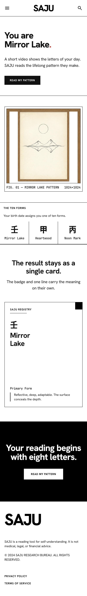
신뢰·정밀·보편성 최대. "SAJU RESEARCH BUREAU" 포지셔닝으로 미신 오인 원천 차단. FIG./REGISTRY 도판 문법이 물상론의 '계산 근거 표기'와 완벽 결합.
웜 차콜 + 본 + 앰버 · 미술관 야간 조명 · 프레임 아트워크
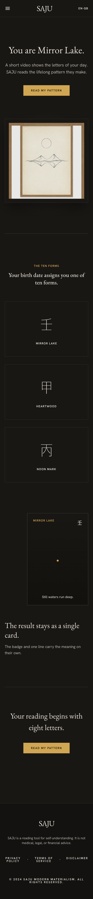
프리미엄 감성 최고. 단, 가드레일 '밝음' 원칙과 긴장 — 채택 시 오컬트 무 오염 조건 유지 필요.
라벤더 페이퍼 + 세이지/클레이 · 원형 배지 칩 · 캘름 무드
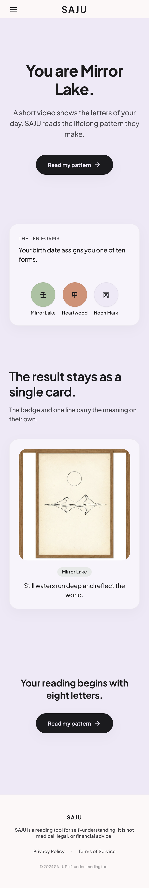
접근성·친화 최대 (글로벌 여성층 강점). 감성은 강하나 '연구소' 신뢰 축은 약함.
오프화이트 + 강제 보더 + 모노 · 스탬프 라벨 · 핫 오렌지
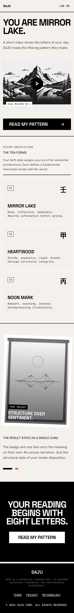
차별성·임팩트 최대 (산수 영상 블록이 ink-ill-10 문법과 흡사). LOG IN 노출 등 구조 위반 1건 수정 필요.
웜 그레이 + 극도 여백 · 딥 그린 미니 액센트 · MUJI식 정직
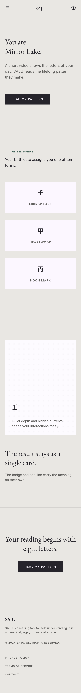
절제 미학 최고. 단 히어로 시각 자산 부재 — 3초 후킹 약함.
| 방향 | 신뢰 | 전환 후킹 | 글로벌 보편성 | 가드레일 정합 | 공유 카드 적합 | 종합 |
|---|---|---|---|---|---|---|
| Swiss | 최상 | 중상 | 상 | 완전 | 상 (도판 카드) | 92 권장 |
| Gallery Dark | 중 | 상 | 중 | 긴장 (다크) | 상 | 84 |
| Pastel Calm | 중상 | 상 | 상 (여성층) | 완전 | 중상 | 82 |
| Brutalist | 중 | 최상 | 중 | 완전 (수정 1) | 상 | 80 |
| Muji Minimal | 상 | 하 | 상 | 완전 | 중 | 78 |
동일 카피덱 · 동일 구성. Swiss 계열과의 차별 축: 건축·출판·콘솔·매거진 문법으로 확장. 전부 780px 렌더 · 오컬트 금지 준수.
청사진 블루 #16324F + 백색 라인워크 · 치수선·콜아웃·타이틀블록 — "판정은 코드" 철학의 도면화
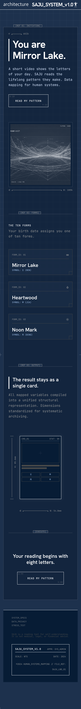
Swiss와 자매 축. SAJU_SYSTEM_v1.0 타이틀 블록이 브랜드 서사 그 자체. 다크 계열이나 mysticism 제로.
흑백 프레임 + 홀로 실버 포일 · 앵글 크롭 · 포카 칩 태그 — 아이돌 매거진 에너지
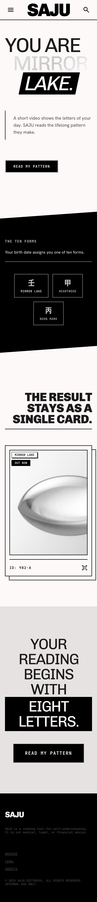
글로벌 팬덤 취향 직격. EIGHT LETTERS 반전 블록 등 타이포 연출 강함.
원적콜 삼원 블록이 레이아웃 그 자체 · 두꺼운 룰 · 비대칭 블록 그리드
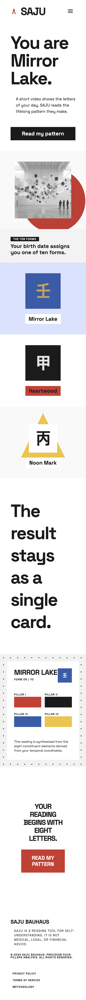
구조 = 장식. 오방색 체계와 원리적으로 공명(삼원색 매핑 시).
크림 + 딥 포레스트 + 골드 포일 헤어라인 · 식물 동판화 모티프 · 아포테케리 럭셔리
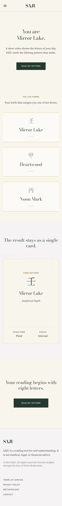
물상(초목) 모티프와 정서적 결합 강함. 스캠 위험은 카피 톤으로 통제.
뉴스프린트 크림 · 다단 컬럼 · 드롭캡 · 데이트라인 스탬프(SEOUL - 2026) · 하프톤 사진
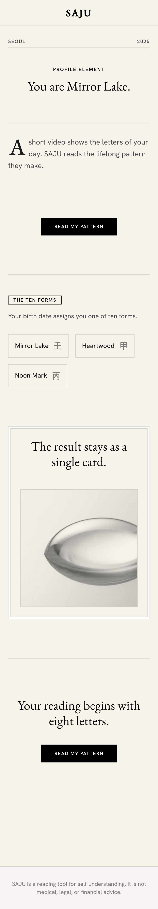
"개인 리포트의 신문 지면" — 연출 재미 최대, 모바일 밀도 관리 필요.
#0D1117 콘솔 · 포스퍼 그린 모노 · 스캔라인 — 엔지니어링 콘솔 무드
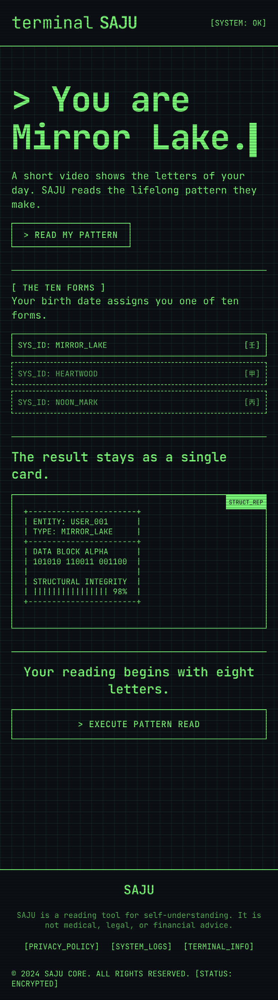
다크 + 모노 — 개발자 인접층엔 최강, 일반 컨슈머 진입 장벽. 데모/서브페이지 용도 권장.
1차 스캔 후보: Swiss 92 (본체) · Blueprint 88 (자매 축). 확정 시 Swiss 본체 + Blueprint 도판 문법(근거 태그 강화) 혼합이 최신 권장이다. 이전 권장: 이유: (1) "연구 기관의 정밀함"이 설계 문서의 '판정은 코드가 확정' 철학과 동일 축 (2) FIG./REGISTRY 도판이 근거 표기(U2·P1)를 시각화 (3) 오컬트 오인 리스크 0. 산출 파일: 이 페이지 하단 경로, 스크린 ID는 flows-v2-en 매니페스트와 동일 방식으로 별도 기록 예정.